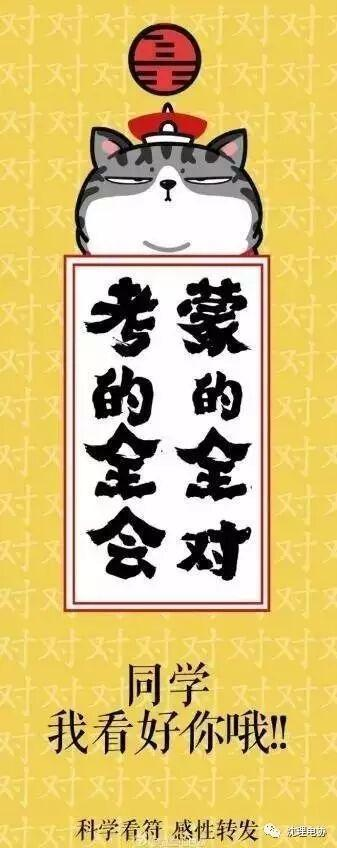
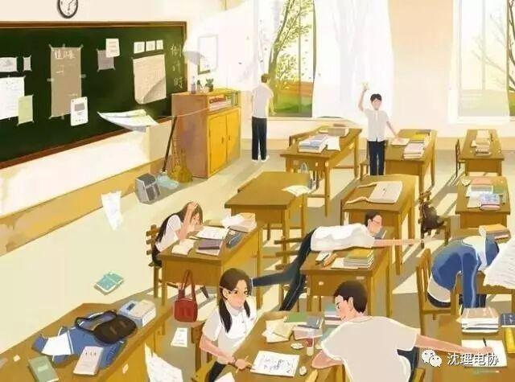

使用小程序
此时，高考已结束，各种情绪悄然升温，烦躁、敏感、疑虑、懊悔……此刻的你，是斗志昂扬？还是疑虑重重？要我怎么告诉你——这场成败在你漫长精彩的一生中并不能决定你的生命质地和人生向往，它只是一场人生轨迹的选择，一条淬炼品质的道路。你只需放平心态，竭尽全力，将三年所学尽情展现在张张答卷之中，无论结果，那都是最好的答卷。

The day when the college entrance examination began, a banner hung above the school gate, on which wrote: A loyal heart, two kinds of preparations. These words were also written on the blackboard in front of the classroom. Two kinds of preparations were to go to college or fail in the exam. A loyal heart meant that whether our working positions were, we could all make great achievements. At that time we all had a loyal heart and a kind of preparation, that is, to gain admissions into college. Later we discovered we had actually made the latter kind of preparation, because we all failed.
高考那一天，学校的大门口挂上了横幅，上面写着：一颗红心，两种准备。教室里的黑板上也写着这八个字，两种准备就是录取和落榜。一颗红心就是说在祖国的任何岗位上都能做出成绩。我们那时候确实都是一颗红心，一种准备，就是被录取，可是后来才发现我们其实做了后一种准备，我们都落榜了。
——余华《十九年前的一次高考》
世界上的事情，绝对的公平是不存在的，譬如这高考，本身也存在着很多不公平，但它比当年的推荐工农兵大学生是公平的多了。对广大的老百姓的孩子来说，高考是最好的方式，任何不经过考试的方式，譬如保送，譬如推荐，譬如各种加分，都存在着暗箱操作的可能性。
——莫言《陪女儿高考的这一整天》
高三是个竞技场，你是个运动员。一切的借口，一切的伤痛，一切的眼泪，一切的软弱都无人喝彩。不要说什么过程最重要，只有大学《录取通知书》是王道。
不要抱着“锻炼锻炼”的想法，那只能暴露出你的漫不经心，缺乏诚意。
我的高三，是在理性中度过的。告别时也非常平静，我不会涕泗交流，不会撕书泄愤，不会跳楼自杀，不会彻夜狂欢。不会过于怀念高三，也不会全盘否定高三。
那是一段短暂的“运动员生涯”。用汗水去追逐光荣与梦想，也感受怅然与失落。如此而已。
——蒋方舟《高三，不相信传说》
1981年，我高考不理想，居然把作文写跑题了，只考上了大兴安岭师范专科学校，学中文。因为课业不紧，我有充足的时间阅读从图书馆借来的中外名著，使我眼界大开。学校面对山峦草滩，自然风景壮美。我写了大量自然景色的观察日记，这应该算是最早的文学训练了。开始尝试写小说，是1983年。我运气不错，只投过几篇稿子，《北方文学》的编辑就开始与我联系，从而走上文坛。
——迟子建《人生就是悲凉与欢欣》

昔日龌龊不足夸，今朝放荡思无涯。
春风得意马蹄疾，一日看尽长安花。
——孟郊《登科后》
得意减别恨，半酣轻远程。
翩翩马蹄疾，春日归乡情。
——白居易《及第诗》
金榜高悬姓字真，分明折得一枝春。
蓬瀛乍接神仙侣，江海回思耕钓人。
九万抟扶排羽翼，十年辛苦涉风尘。
升平时节逢公道，不觉龙门是险惊。
——袁皓《及第后作》
编辑：信息部 白金朋